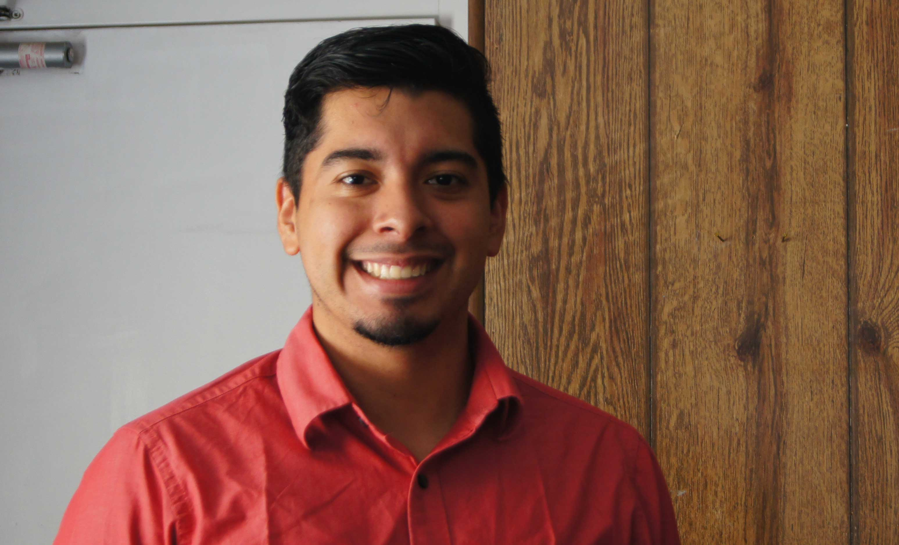

Life is about stories
As a journalist, I like to share them with the world.

My name is Andrés Leiva, and I'm a journalism student at the University of Florida, in Gainesville. I was born in Miami, FL, but I grew up in the Central American country of El Salvador. I am billingual, and I enjoy reading and writing in both English and Spanish.
Latin America is my passion, and my goal is to one day return and work in my home country. I am interested in telling human stories - capturing the experiences of people in one country and being able to show it in another.
In 2014 I became a staff photographer for the Independent Florida Alligator. I consider myself a multimedia journalist - that is, I am skilled in writing and videography as well as photography.
My beats are hip-hop and my drink is a chai latte.